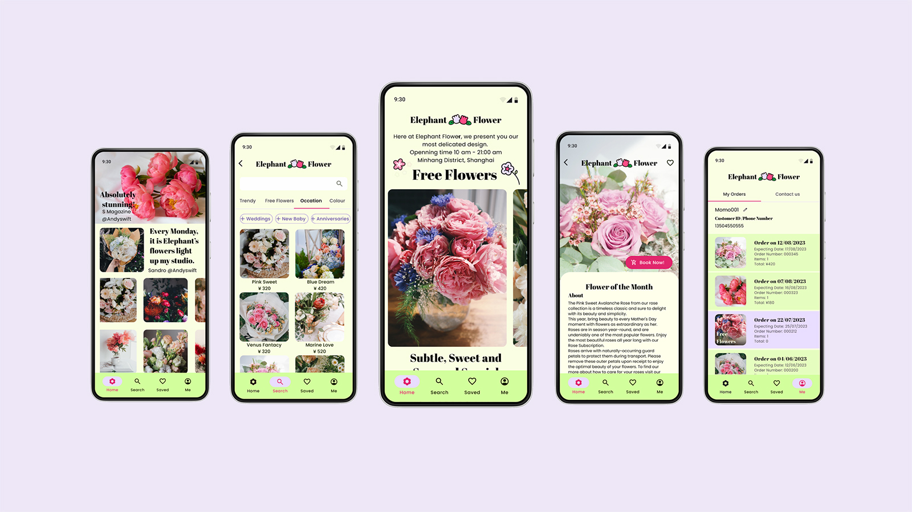
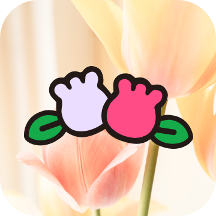
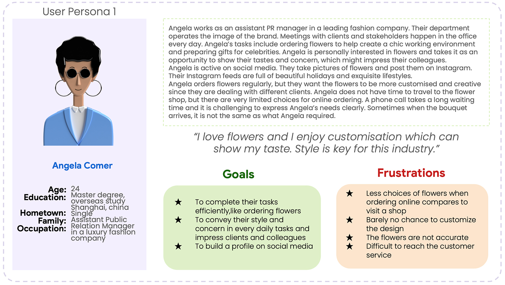
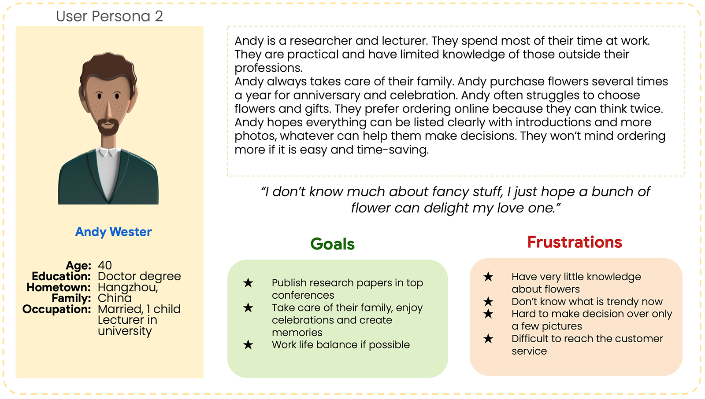
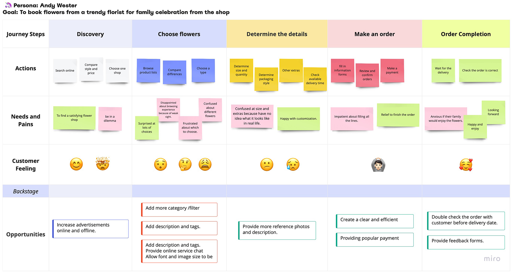
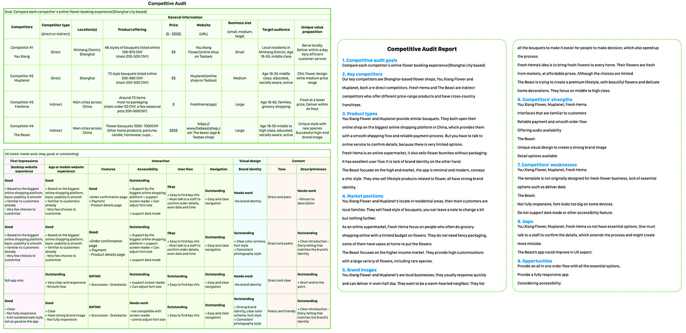
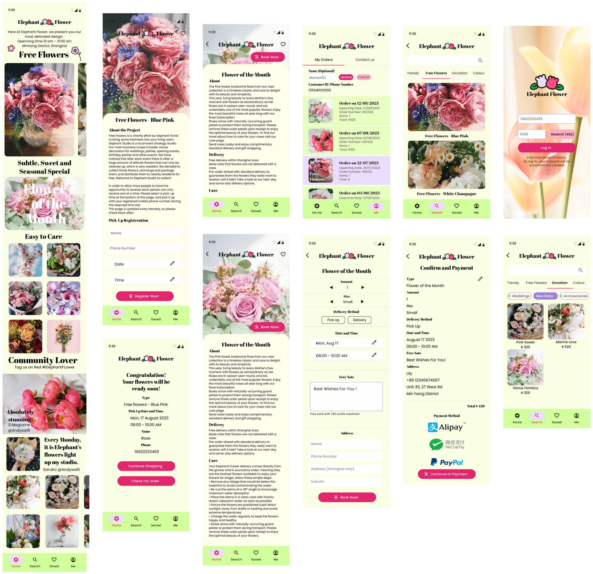
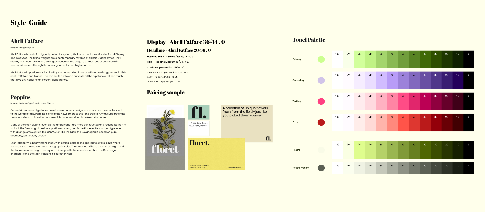

<div class="modal fade" id="project-2-modal" data-bs-focus="true" data-bs-keyboard="false" tabindex="-1" aria-labelledby="staticBackdropLabel" aria-hidden="true">
    <div class="modal-dialog modal-dialog-centered modal-fullscreen modal-dialog-scrollable">
        <div class="modal-content">
            <div class="modal-body">
                <a id="modal-close" class="btn-close btn-close-white fixed-top" data-bs-dismiss="modal" aria-label="Close"></a>
                <div class="container">
                    <div class="row">
                        <div class="col-lg-12">
                            <div class="modal-center-content">
                                
                            </div>
                            <div class="modal-center-content text-center">
                                <h1 style="padding-bottom:10px">The Flower Shop</h1>
                                <button type="button" class="btn btn-outline active">0 to 1 Project</button>
                                <button type="button" class="btn btn-outline active">Local Business</button>
                                <button type="button" class="btn btn-outline active">Customisation</button>
                                <button type="button" class="btn btn-outline active">Sustainable Project</button>
                                <button type="button" class="btn btn-outline active">Accessibility</button>
                            </div>
                            <div class="text-center modal-center-content">
                                
                            </div>
                            <div class="text-center modal-center-content">
                                <p>
                                    The Flower Shop brings freshness to the local community.
                                </p>
                                <p>The shop has a sustainable project which gives away recycled flowers for free.</p>
                                <p>
                                    My role: UX Research, UX & UI Design, Product Management.
                                </p>
                            </div>
                            <div class="modal-center-content">
                                <h3>Background</h3>
                                <h4>The difficulties</h4>
                                <p>
                                    Our clients are mainly engaged in event planning. During the preparation process of the event and after the event, there are often a large number of surplus flowers, and the clients hope to sell these
                                    flowers at a low price or give them to nearby residents. Considering that there is a plan to expand the product category, they want to establish an independent retail channel to reach more customers.
                                </p>
                                <ul>
                                    <li><b>User research</b><br>Our clients usually deal with large corporations. Although they have good purchase channels and customer service, they have a limited understanding of the retail platform.
                                        Clients want us to take on
                                        some user research and incorporate it into the design.
                                    </li>
                                    <li><b>Customisation</b><br>They have a preferred style direction and have high requirements for customisation.</li>
                                    <li><b>Scalability</b><br>
                                        In the future, sales categories may be expanded. We should pay attention to reserving a room for development.
                                    </li>
                                </ul>
                                <h4>The Solution</h4>
                                <div class="text-center">
                                    <div class="ratio ratio-16x9">
                                        <iframe src="https://www.youtube.com/embed/w5ugVbbxWAc" title="YouTube video" allowfullscreen></iframe>
                                    </div>
                                    <br>
                                    <button type="button" class="btn btn-primary">
                                        <a href="https://www.figma.com/proto/QKBMp61AgkmY8WQu0guhTO/Elephant-FLower?node-id=235%3A2615&scaling=scale-down&page-id=2%3A533&starting-point-node-id=314%3A2704" target="_blank">Interactive
                                            Prototype</a>
                                    </button>
                                </div>
                            </div>
                        </div>
                    </div>
                    <div class="row">
                        <div class="col-lg-6 modal-left-panel">
                            <div class="modal-left-content">
                                <h3>User Research</h3>
                                <p>
                                    To help narrow down the topic, I decided to take a questionnaire first. Because the client's target is residents, we collected 120 questionnaires in multiple local communities. The age range of survey
                                    participants is 18-60 years old. They have purchased or intend to buy/receive free flower materials.
                                </p>

                                <h4>Research Goals</h4>
                                <ul>
                                    <li>Understand the consumption habits and consumption patterns of potential users.</li>
                                    <li>Discover the shortcomings and opportunities of standard similar products.</li>
                                    <li>Understand the acceptance of target users for the form of recycle flowers.</li>
                                </ul>

                                <h4>Insights</h4>
                                <p>
                                    First, regardless of whether they have purchased flowers before, almost all respondents welcome the form of recycled flowers and think it is positive. Especially for the elderly group, this is also beyond
                                    our expectations.
                                </p>
                                <ul>
                                    <li>There are many large shopping platforms in China, and nearly half of the respondents have purchased flowers on these large shopping platforms. They have also purchased from flower shops in-store, and
                                        2/3 of them have also ordered from the online channels of these in-store flower shops. In addition to large-scale platforms, there are WeChat applets, apps and other forms.
                                    </li>
                                    <li>More than 80% of respondents believe that regular florists are overpriced.</li>
                                    <li>The demand for buying flowers is concentrated on special occasions, personal hobbies, home decoration, and office scenes.</li>
                                    <li>Nearly 70% of the respondents are willing to subscribe to flowers for a long time (under the premise of low price or free)</li>
                                    <li>Many respondents indicated they needed help from shop assistants during the purchase process.</li>
                                    <li>Online purchase options are limited; you may need to communicate with customer service again after placing an order.</li>
                                </ul>
                            </div>
                            <div class="modal-left-content">
                                <h3>Competitive Audit</h3>
                                <p>
                                    I analysed the basic business model and online ordering experience of flower shops in the Shanghai market and selected a few as key comparison objects. Including local independent flower shops as direct
                                    competitors but also indirect competitors like Fresh Hema and The Beast, both have cross-country franchises.
                                </p>
                                <p>
                                    Small flower shops often use online store services provided by shopping platforms. In China, these platforms have a solid and broad base, and users are very familiar with the platforms' interface. At the
                                    same time, a mature order and payment system can bring a smooth experience. However, these platforms are not designed for flower delivery, and there are many limitations in actual use. In addition to the
                                    order process, the user still needs to communicate with human customer service again to confirm the specific content. And because updating product information is relatively cumbersome, there are cases
                                    where the update is not timely or comprehensive. Complex back-office systems are also time-consuming, sometimes requiring additional staff.
                                </p>
                                <p>
                                    Large-scale online supermarkets ensure the effectiveness of delivery of fresh products and are supported by a smooth order system. It's a pity that they don't support customised needs. Available in fixed
                                    loose bouquets only, without packaging. High-end florists provide various customisation solutions, but the functions that users can complete in the app are also quite limited. The style still needs to be
                                    communicated with the store's customer service to determine the details.
                                </p>
                                <p>
                                    All flower shops prioritise the mobile platform; some companies do not even provide a web version. In addition, combining the previous user research and the particularity of our products, middle-aged and
                                    older people may also be our potential users. None of the products examined were optimised in this regard, which may be one of our opportunities for differentiation.
                                </p>
                                <h4>The goal</h4>
                                <ul>
                                    <li>To create a fully responsive and accessible app</li>
                                    <li>To provide an all-in-one order flower order flow without external assistant</li>
                                </ul>
                            </div>
                            <div class="modal-left-content">
                                <h3>User Test and Prototypes</h3>
                                <p>
                                    Before making a high-fidelity prototype, we conducted a usability test to ensure the smooth flow of the primary process. We invited five residents, mobile phone users aged 18-60. Insights focus on the
                                    unsmooth layout of the interface. Some functions are easily overlooked and have a low usage rate, while some parts are too complicated. And our client proposed that they need to leave more space for their
                                    setting to add graphic design content, such as event posters, in the future. Based on these contents, I adjusted the display method of the options, re-corrected the layout, made some functions more
                                    apparent, and eliminated redundant content. Strive to bring simple and effective procedures to residents. At the same time, I left more space for autonomy on the client side, and the background system was
                                    gradually designed.
                                </p>

                                <h3>Style Guide</h3>
                                <p>
                                    In terms of UI, the client hoped this would be an app with a "slightly retro temperament, reminiscent of a small shop on the corner of the street". I recommend using a warm light green as the theme
                                    colour, and the font uses a combination of serif and sans serif fonts, just like the newspaper packaging commonly seen in flower shops. The overall component design refers to the Material Design, which
                                    not only conforms to the customer's preference for flat design but also ensures the essential ease of use. All colourways are designed to meet internet usability standards.
                                </p>
                            </div>
                        </div>
                        <div class="col-lg-6 modal-right-panel">
                            <div class="modal-right-content">
                                <div class="modal-display">
                                    
                                </div>
                                <div class="modal-display">
                                    
                                </div>
                            </div>
                            <div class="modal-right-content">
                                <div class="modal-display">
                                    
                                </div>
                                <div class="modal-display">
                                    
                                </div>
                            </div>
                            <div class="modal-right-content">
                                <div class="modal-display">
                                    
                                </div>

                                <div class="modal-display">
                                    
                                </div>
                            </div>
                        </div>
                    </div>
                    <div class="row">
                        <div class="col-lg-12">
                            <div class="modal-center-content">
                                <h3>Next Step & Reflection</h3>
                                <p>
                                    The basic framework of the product has been built, but any product has room for further improvement. For example, if necessary, design a complete set of interfaces for the elderly, easier-to-use front-end
                                    and back-end systems, etc. After it is officially put into use, these can be adjusted in time according to the usage situation and user feedback.
                                </p>
                                <p>
                                    In this project, communication with clients is a crucial link. I need to listen to the needs of clients, help them sort out their ideas, and sometimes I need to make choices with them. On the premise of
                                    pursuing user experience, it is also necessary to respect your clients' opinions and, at the same time, ensure that the technical team can achieve results. Fortunately, everyone is satisfied in the end.
                                </p>
                                <p>
                                    There are also some unexpected results in the research process, for example, there are more elderly users than we initially thought, and they welcome this form very much. This project itself has a
                                    particular attribute of community sharing. After in-depth research, the importance of accessibility has gradually increased. In addition to what is necessary for the project, I also take the initiative to
                                    learn related technologies. I am learning while working.
                                </p>
                            </div>
                        </div>
                    </div>
                </div>
            </div>
        </div>
    </div>
</div>